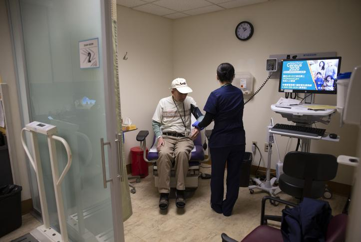

Comprehensive Outpatient Services at LifeBridge Hospital
LifeBridge Hospital is committed to delivering high-quality outpatient care, providing patients with access to a wide range of medical services without the need for an overnight stay. Whether you're seeking routine check-ups, diagnostic tests, or specialized treatments, our outpatient department is designed to offer convenience, efficiency, and top-tier medical expertise in a comfortable environment. Our focus is on providing personalized care that fits your lifestyle and health needs, ensuring that you receive timely medical attention while minimizing disruption to your daily routine.
Advanced Diagnostic and Treatment Facilities
Our inpatient units are equipped with the latest medical technology, designed to deliver the best possible care while maximizing patient comfort. Each room offers privacy and amenities that aid recovery, creating a supportive environment for both patients and their families. Our specialists develop personalized treatment plans that address your unique medical, emotional, and rehabilitative needs, ensuring a comprehensive approach to your care.
Expert Medical Team Focused on Your Health

At LifeBridge Hospital, our outpatient care is provided by a team of highly skilled specialists, nurses, and healthcare professionals. We collaborate to ensure that each patient receives individualized attention and treatment based on their specific medical needs. Whether you require follow-up care after a hospital stay, specialist consultations, or ongoing management of chronic conditions, our expert team is here to guide you through every step of your care journey.